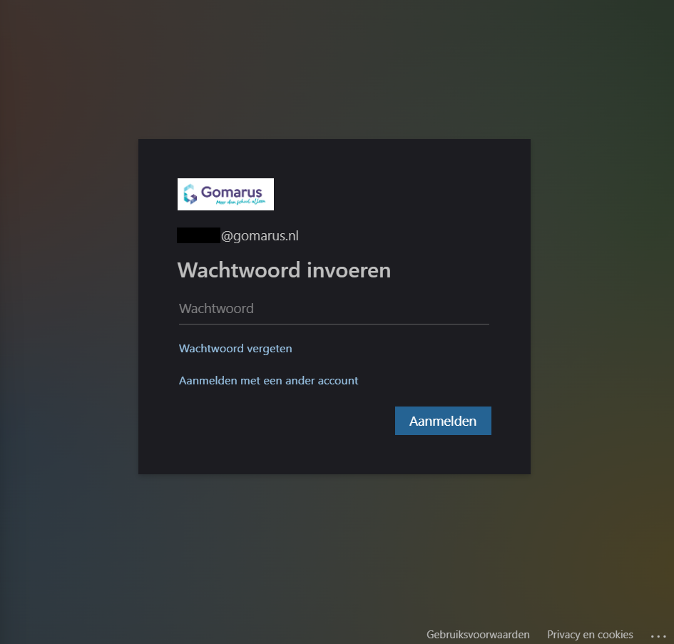
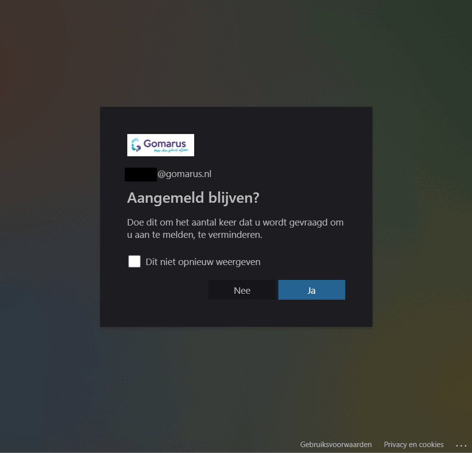

Voer eerst een korte versie van je schoolnaam in. Je wordt daarna naar de loginpagina van je school geleid. Daar log je in met je normale gegevens.
Daarna zul je zien dat het inlogformulier maar blijft laden. Druk dan op de f12 toets en ga naar console. Je ziet een rode error met een link erin. Rechtermuisklik op die link, kies link kopiëren en plak hem in deze pagina: login link
